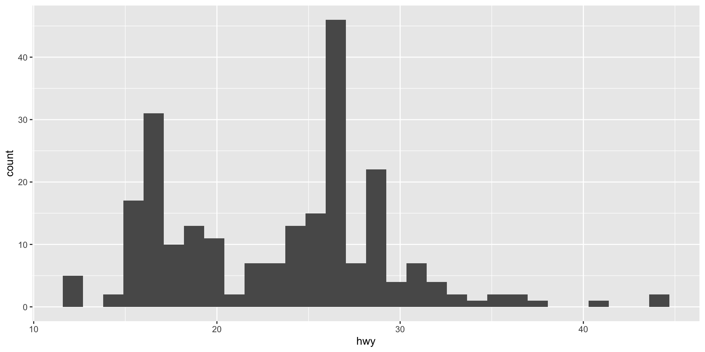

Data Visualization
Data Visualization
Data visualization is a key step in the data analysis process that helps to turn abstract data into actionable insights. Data visualization helps in making sense of data, revealing hidden patterns, and communicating results effectively.

ggplot2: An Overview
A visualization package in R that uses the grammar of graphics.
Installing & Loading ggplot2
- First, we need install the
ggplot2library
(Typically, required only once for a workspace/environment)
- After installation, let us load the
ggplot2library
The Grammar of Graphics in ggplot2
Explains how to compose graphs from a dataset, aesthetic mappings, and geometric objects.
A flexible template that forms the foundation of any ggplot2 graph.
The mpg Dataset
The mpg dataset contains fuel economy data for 234 cars ranging from 1999 to 2008.
US Environmental Protection Agency (EPA)
Dataset Overview
A look at the dataset’s variables: manufacturer, model, displacement, year, number of cylinders, and fuel economy measurements.
| Variable | Description |
|---|---|
manufacturer |
Name of the car manufacturer |
model |
Model of the car |
displ |
Engine displacement, in liters |
year |
Year of manufacture |
cyl |
Number of cylinders |
trans |
Type of transmission |
drv |
Type of drive train (f = front-wheel, r = rear-wheel, 4 = 4wd) |
cty |
City miles per gallon |
hwy |
Highway miles per gallon |
fl |
Fuel type |
class |
Vehicle class |
Dataset head()
| manufacturer | model | displ | year | cyl | trans | drv | cty | hwy | fl | class |
|---|---|---|---|---|---|---|---|---|---|---|
| audi | a4 | 1.8 | 1999 | 4 | auto(l5) | f | 18 | 29 | p | compact |
| audi | a4 | 1.8 | 1999 | 4 | manual(m5) | f | 21 | 29 | p | compact |
| audi | a4 | 2.0 | 2008 | 4 | manual(m6) | f | 20 | 31 | p | compact |
| audi | a4 | 2.0 | 2008 | 4 | auto(av) | f | 21 | 30 | p | compact |
| audi | a4 | 2.8 | 1999 | 6 | auto(l5) | f | 16 | 26 | p | compact |
| audi | a4 | 2.8 | 1999 | 6 | manual(m5) | f | 18 | 26 | p | compact |
Dataset summary()
| manufacturer | model | displ | year | cyl | trans | drv | cty | hwy | fl | class | |
|---|---|---|---|---|---|---|---|---|---|---|---|
| Length:234 | Length:234 | Min. :1.600 | Min. :1999 | Min. :4.000 | Length:234 | Length:234 | Min. : 9.00 | Min. :12.00 | Length:234 | Length:234 | |
| Class :character | Class :character | 1st Qu.:2.400 | 1st Qu.:1999 | 1st Qu.:4.000 | Class :character | Class :character | 1st Qu.:14.00 | 1st Qu.:18.00 | Class :character | Class :character | |
| Mode :character | Mode :character | Median :3.300 | Median :2004 | Median :6.000 | Mode :character | Mode :character | Median :17.00 | Median :24.00 | Mode :character | Mode :character | |
| NA | NA | Mean :3.472 | Mean :2004 | Mean :5.889 | NA | NA | Mean :16.86 | Mean :23.44 | NA | NA | |
| NA | NA | 3rd Qu.:4.600 | 3rd Qu.:2008 | 3rd Qu.:8.000 | NA | NA | 3rd Qu.:19.00 | 3rd Qu.:27.00 | NA | NA | |
| NA | NA | Max. :7.000 | Max. :2008 | Max. :8.000 | NA | NA | Max. :35.00 | Max. :44.00 | NA | NA |
Visualization Objectives
- Fuel Economy Trends: Identify trends in fuel efficiency over time.
- Displacement vs. Mileage: Understand how engine size affects fuel economy.
- Manufacturer Comparison: Compare different manufacturers based on fuel economy.
Univariate Analysis: Highway Mileage
Analyzing the highway miles per gallon (hwy) distribution.

- Insight: The majority of cars have highway mileage ratings between 25 to 35 miles per gallon.
Univariate Analysis: Displacement
Exploring engine displacement (displ) across all cars.
- Insight: Smaller engine displacements are more common, suggesting a concentration of more fuel-efficient vehicles.
Bivariate Analysis: Displacement vs. Highway Mileage
Investigating the relationship between engine displacement (displ) and highway mileage (hwy).
- Insight: There is a clear negative trend indicating that larger engine sizes are associated with lower highway mileage.
Bivariate Analysis: Manufacturer Comparison
Comparing fuel economy across manufacturers with boxplots.
- Insight: There is significant variability in highway mileage among manufacturers, with some consistently outperforming others.
Multivariate Analysis: Engine Size, Cylinders, and Fuel Economy
Analyzing how engine size and the number of cylinders relate to fuel economy.
- Insight: Cars with fewer cylinders tend to have better highway mileage, despite the size of the engine.
The diamonds Dataset
The diamonds dataset contains prices and attributes of approximately 54,000 round-cut diamonds.

Dataset Overview
A quick overview of the dataset’s structure and variables: carat, cut, color, clarity, depth, table, price, x (length), y (width), and z (depth).
| Variable | Description |
|---|---|
carat |
Weight of the diamond |
cut |
Quality of the cut (Fair, Good, Very Good, Premium, Ideal) |
color |
Diamond color, from J (worst) to D (best) |
clarity |
How clear the diamond is (I1, SI2, SI1, VS2, VS1, VVS2, VVS1, IF) |
depth |
\(\text{Depth percentage} = \left( \frac{z}{\frac{x + y}{2}} \right) \times 100\) |
table |
Width of the top of the diamond relative to the widest point |
price |
Price in US dollars |
x |
Length in mm |
y |
Width in mm |
z |
Depth in mm |
Dataset head()
| carat | cut | color | clarity | depth | table | price | x | y | z |
|---|---|---|---|---|---|---|---|---|---|
| 0.23 | Ideal | E | SI2 | 61.5 | 55 | 326 | 3.95 | 3.98 | 2.43 |
| 0.21 | Premium | E | SI1 | 59.8 | 61 | 326 | 3.89 | 3.84 | 2.31 |
| 0.23 | Good | E | VS1 | 56.9 | 65 | 327 | 4.05 | 4.07 | 2.31 |
| 0.29 | Premium | I | VS2 | 62.4 | 58 | 334 | 4.20 | 4.23 | 2.63 |
| 0.31 | Good | J | SI2 | 63.3 | 58 | 335 | 4.34 | 4.35 | 2.75 |
| 0.24 | Very Good | J | VVS2 | 62.8 | 57 | 336 | 3.94 | 3.96 | 2.48 |
Dataset summary()
| carat | cut | color | clarity | depth | table | price | x | y | z | |
|---|---|---|---|---|---|---|---|---|---|---|
| Min. :0.2000 | Fair : 1610 | D: 6775 | SI1 :13065 | Min. :43.00 | Min. :43.00 | Min. : 326 | Min. : 0.000 | Min. : 0.000 | Min. : 0.000 | |
| 1st Qu.:0.4000 | Good : 4906 | E: 9797 | VS2 :12258 | 1st Qu.:61.00 | 1st Qu.:56.00 | 1st Qu.: 950 | 1st Qu.: 4.710 | 1st Qu.: 4.720 | 1st Qu.: 2.910 | |
| Median :0.7000 | Very Good:12082 | F: 9542 | SI2 : 9194 | Median :61.80 | Median :57.00 | Median : 2401 | Median : 5.700 | Median : 5.710 | Median : 3.530 | |
| Mean :0.7979 | Premium :13791 | G:11292 | VS1 : 8171 | Mean :61.75 | Mean :57.46 | Mean : 3933 | Mean : 5.731 | Mean : 5.735 | Mean : 3.539 | |
| 3rd Qu.:1.0400 | Ideal :21551 | H: 8304 | VVS2 : 5066 | 3rd Qu.:62.50 | 3rd Qu.:59.00 | 3rd Qu.: 5324 | 3rd Qu.: 6.540 | 3rd Qu.: 6.540 | 3rd Qu.: 4.040 | |
| Max. :5.0100 | NA | I: 5422 | VVS1 : 3655 | Max. :79.00 | Max. :95.00 | Max. :18823 | Max. :10.740 | Max. :58.900 | Max. :31.800 | |
| NA | NA | J: 2808 | (Other): 2531 | NA | NA | NA | NA | NA | NA |
Visualization Objectives
- Price Distribution: Analyzing the distribution of diamond prices.
- Carat Size Analysis: Understanding how carat size affects price.
- Cut Quality: Examining the relationship between diamond cut and other attributes.
Univariate Analysis: Price
Visualizing the distribution of diamond prices using histograms and density plots.
Univariate Analysis: Carat
Understanding carat distribution with a histogram.
Bivariate Analysis: Price vs. Carat
Exploring the relationship between price and carat size with scatter plots.
Bivariate Analysis: Cut vs. Price
Comparing average price across different cuts using boxplots.

Multivariate Analysis
Incorporating multiple attributes into our visual analysis, like cut and color versus price.
Exercise
Generate a plot to show the relationship between the following variables from the diamonds dataset: carat, cut, clarity, and price.
A bar chart of the cut
categorized by clarity, stakced
categorized by clarity, clustered
categorized by clarity, normalized
Useful ggplot2 References
- ggplot2 Documentation
- ggplot2 Cheat Sheet
- R Graphics Cookbook
- ggplot2 Book
- ggplot2 Extension Gallery
- ggplot2 Example Gallery
- ggplot2 Visualization Catalog